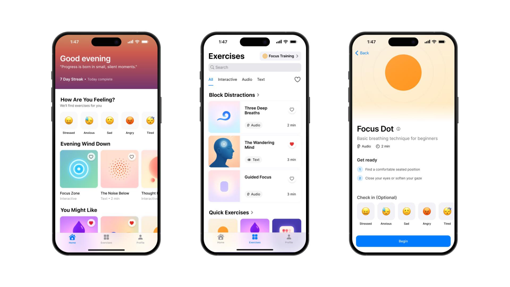
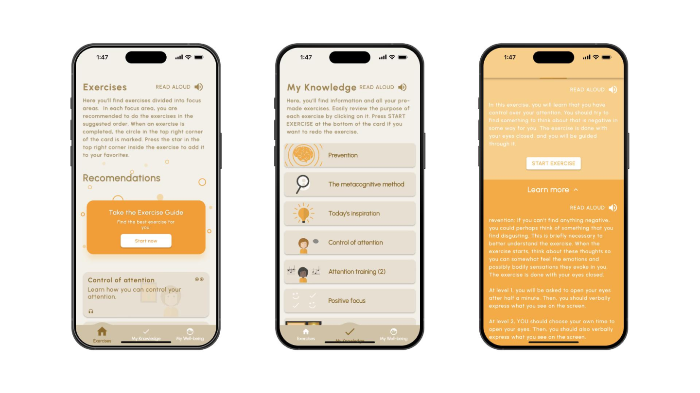
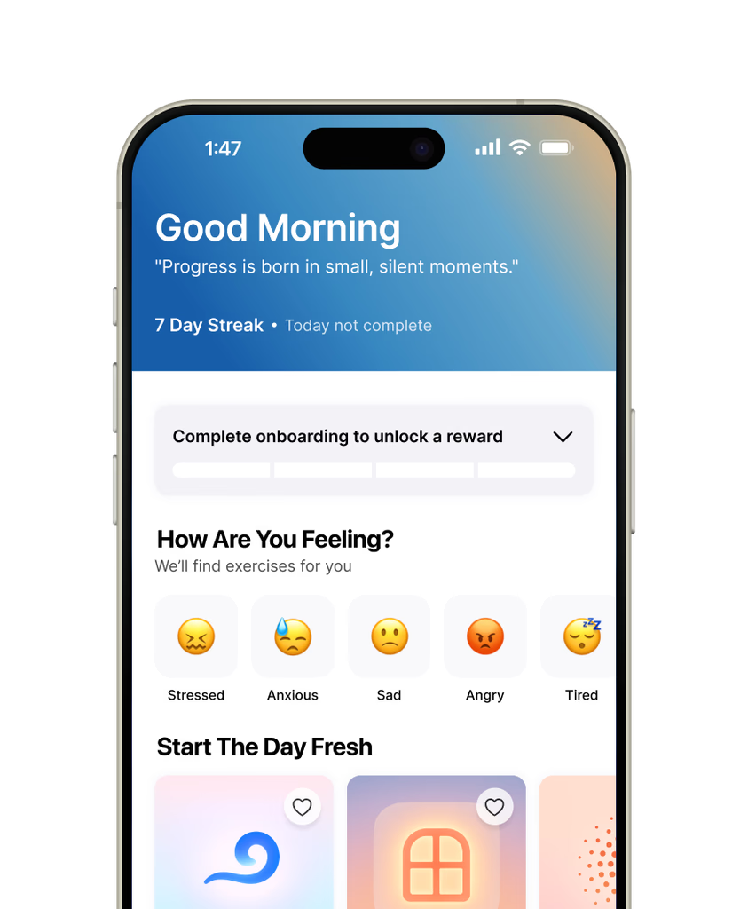
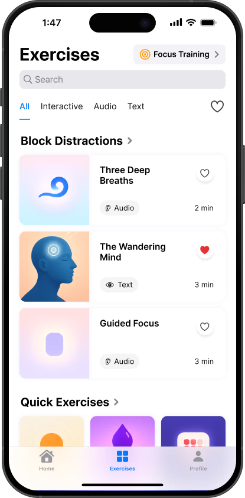
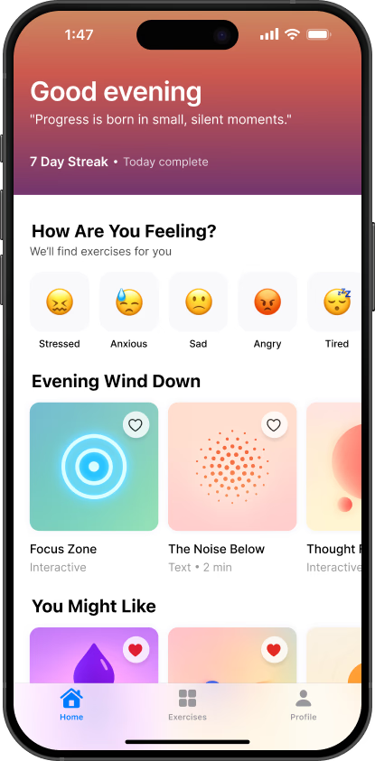

Process
Wireframing every core flow.
Dozens of low-fidelity screens mapped the full experience before a single pixel was polished.
Meta Learn
A brand-new design system, rebuilt from the ground up for clarity.
84 SUS usability score, up from 52. Now above the industry benchmark.
2.1× faster task completion across the five core flows.
+71% 30-day retention after the redesign launched.
An 80-component design system, documented and App Store ready.
Onboarding cut from 11 steps to 3 — value before commitment.
Problem
Meta Learn already had strong content: science-backed exercises, quality programs, and real mental-fitness expertise. The problem was access. Key actions were buried, progress was invisible, and users dropped off before reaching the value.


Research
Usability testing
Users could not find the next step.
Exercise content existed, but the route to it felt unclear and easy to abandon.
Analytics
Progress had no visible anchor.
Users had little feedback on improvement, consistency, or what their sessions added up to.
Heuristic evaluation
High-value actions sat too deep.
Useful tools were often two or three taps away from the moments users needed them.
User surveys
Onboarding asked too much too soon.
The original setup delayed value and lost most new users before they reached the product.
User interviews
Professionals wanted quick wins.
Users needed short, credible sessions they could fit between meetings without searching.
SUS testing + benchmarking
Usability benchmarked poorly.
The original app scored 52 on SUS, well below the 68-point industry benchmark.
Desk research
Habit loops were missing.
Research pointed to cues, streaks, and rewards as the missing support for repeat use.
Goals
Vision
Turn scattered fixes into one clear path: find value fast, feel progress early, and move through a calmer system.
Process
Dozens of low-fidelity screens mapped the full experience before a single pixel was polished.


Validation
Moderated test, n=10
9/10
found a useful exercise without help.
Before
3/10
Wireframe
9/10
Same core task, same user profile, redesigned information architecture.
Reconsidered after testing
Progress still did not feel motivating enough.
Users could find an exercise, but the reward loop felt too quiet. That pushed the next design pass toward clearer progress cues, streaks, and moments of feedback.
Design
Meet the redesigned Meta Learn. Built around a single daily check-in, tailored exercises, and a streak system that actually feels earned.



Collab
Design system
Carry your system everywhere.
80 components, fully documented in Figma. The dev team ships new features 50% faster since handoff.
Handoff
App Store ready.
Passed Apple review on first submission. Helped close a seed funding round with a refreshed investor deck.
Outcomes
SUS usability score
84 pts — up from 52
Task completion
2.1× faster across 5 flows
Up to
+71%
30-day retention
after redesign launch
3
Onboarding steps
down from 11
Time to first action
12 s from cold launch
Reflection
Main takeaway
The interface was never the first problem. The path was.
Once the product had a clear route to value, the visual system had something meaningful to support. Next, I would deepen the progress model around adaptive paths and richer habit cues.
Navigation
Structure is invisible until it breaks.
Users did not describe the app as an information architecture problem. They described it as feeling stuck, unsure, or unmotivated.
Research
The numbers made the feeling actionable.
Testing and analytics turned a vague sense of friction into specific decisions: fewer steps, clearer entry points, and visible progress.
More work